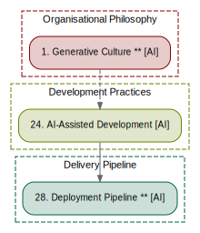

A Pattern Language for DevOps¶
A pattern language for how software engineering organisations build, deliver, and operate software. Following Christopher Alexander's methodology.
AI is not a section. It is a force present at every level.

Patterns by Scale¶
Organisational Philosophy¶
- 1. Generative Culture ** · AI
- 2. Learning Organisation **
- 3. Flow Over Utilisation ** · AI
- 4. Explicit Tradeoffs *
- 5. Trust and Verify *
- 6. Sustainable Pace * · AI
Organisational Structure¶
- 7. Value Stream Alignment **
- 8. Stream-Aligned Teams ** · AI
- 9. Platform Team **
- 10. Enabling Team *
- 11. Complicated Subsystem Team *
- 12. Inverse Conway Manoeuvre *
- 13. Communities of Practice *
Value and Architecture¶
- 14. Everything as Product **
- 15. Service Domain Boundaries **
- 16. Evolutionary Architecture * · AI
- 17. Thin Slice Delivery **
- 18. API as Contract *
- 19. Hypothesis-Driven Development *
Development Practices¶
- 20. Trunk-Based Development **
- 21. Version Control Everything **
- 22. Continuous Integration **
- 23. Test-Driven Development * · AI
- 24. AI-Assisted Development · AI
- 25. Pair and Ensemble Programming * · AI
- 26. Code Review as Learning * · AI
- 27. Living Documentation *
Delivery Pipeline¶
- 28. Deployment Pipeline ** · AI
- 29. Build Once, Deploy Many **
- 30. Progressive Delivery *
- 31. Pipeline as Code *
- 32. GitOps *
- 33. Quality Gates with Escape Hatches *
- 34. Ephemeral Environments *
Infrastructure and Platform¶
- 35. Infrastructure as Code **
- 36. Immutable Infrastructure **
- 37. Platform as Product **
- 38. Containerised Workloads *
- 39. Service Mesh *
- 40. Secrets Management * · AI
Security and Trust¶
- 41. Security as Shared Responsibility **
- 42. Policy as Code **
- 43. Supply Chain Security * · AI
- 44. Threat Modelling as Practice *
- 45. Zero Trust Architecture *
- 46. Blast Radius Limitation *
- 47. Secure AI Integration · AI
Observability, Feedback, and Operations¶
- 48. Observability Over Monitoring **
- 49. SLOs as Contracts **
- 50. Blameless Postmortems **
- 51. You Build It, You Run It **
- 52. Alerting on Symptoms, Not Causes *
- 53. Toil Budgets *
- 54. Incident Response as Practice *
- 55. Graceful Degradation *
- 56. AI-Augmented Observability · AI
About¶
Confidence ratings follow Alexander's convention:
- ** — the author believes this is an invariant
- * — likely true but the form is uncertain
- no star — a hypothesis
Patterns marked AI have their forces meaningfully modified by AI.